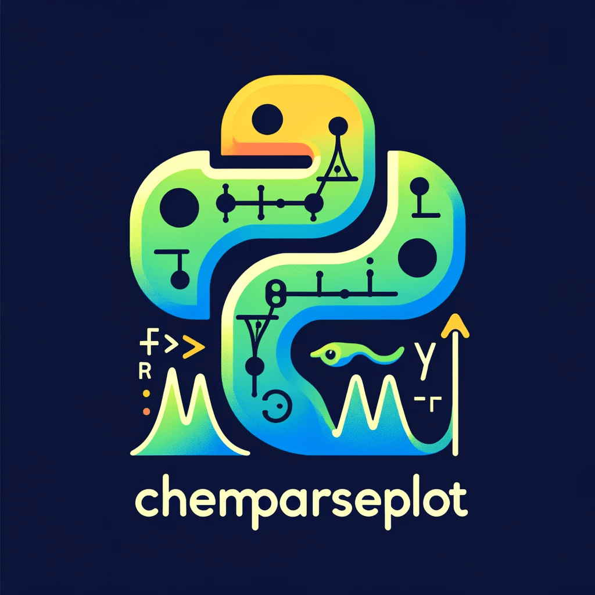

chemparseplot: Chemical Parsers and Plotters¶

About¶
A pure-python [1] project to provide unit-aware uniform visualizations of common computational chemistry tasks. Essentially this means we provide:
Plotting scripts for specific workflows
Parsers for various software outputs
This is a spin-off from wailord (here) which is
meant to handle aggregated runs in a specific workflow, while here the goal is
to do no input handling and very pragmatic output parsing, with the goal of
generating uniform plots. For more information check the features page.
Documentation TOC¶
Features¶
Scientific color maps for the plots - Camera ready
Unit preserving - Via
pint
These are supported for:
License¶
MIT. However, this is an academic resource, so please cite as much as possible via:
The Zenodo DOI for general use.
The
wailordpaper for ORCA usage